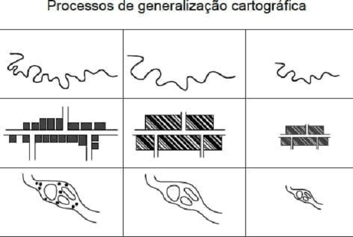
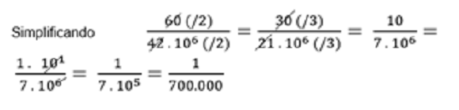
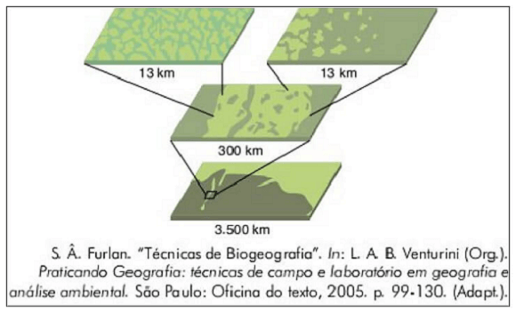
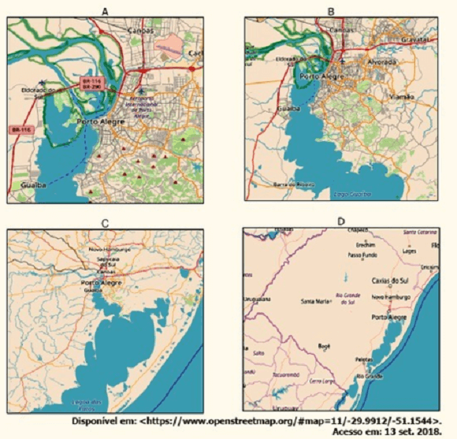

Conteúdo: Escala cartográfica: numérica e gráfica. Escala geográfica.
Objetivo: Entender e aplicar o conceito de escala cartográfica e geográfica.
Questão 01
(Unesp 2019) A generalização cartográfica é o processo que permite reconstruir em um mapa a realidade, mantendo seus traços essenciais.

Um fator importante nesse processo de generalização cartográfica é:
Alternativas:
a) a orientação, pois os elementos do mapa devem se manter proporcionalmente distantes entre si.
b) a topografia, pois a precisão na análise das informações depende de relevos pouco acidentados.
c) a escala, pois sua diminuição promove restrições que geram a perda de informações.
d) a simbolização, pois elementos naturais e antrópicos devem ser representados em mapas diferentes.
e) a altimetria, pois a determinação das curvas de nível é influenciada pelo ponto de observação do cartógrafo.
Comentário:
a) Incorreta. A orientação está relacionada a posição geográfica (Norte, Sul, Leste, Oeste, Nordeste,Noroeste, etc.) dos elementos contidos no mapa.
b) Incorreta. Tanto o relevo pouco acidentado (mais reto e uniforme, sem desníveis, como uma planície) quanto o relevo muito acidentado (montanhas, buracos, depressão) podem ser representados pela Cartografia através de cotas altimétricas, relacionadas a curvas de nível, além do uso de novas ferramentas tecnológicas como imagens de satélite e GPS.
c) Correta. Com a diminuição da escala, do mesmo modo os detalhes apresentados são reduzidos. A generalização envolve uma seleção de objetos de acordo com o objetivo do pesquisador. A generalização ocorre, grosso modo, quando um cartógrafo escolhe fazer um estudo em uma escala grande, 1:100, por exemplo, mas a área de estudo será pequena (uma rua, um bairro), para não ocorrer perda de comunicação entre os objetos representados e o mapa, o pesquisador precisa escolher entre perder detalhes e manter a informação que ele precisa transmitir.
d) Incorreta. Os símbolos (pontos, linhas ou polígonos) podem identificar ou representar quantidades de alguma informação, como quantidade de indústrias em uma cidade ou o quanto de desmatamento ocorreu em uma área. Sendo assim, um único mapa pode conter símbolos cartográficos tanto dos aspectos naturais como sociais, antrópicos (feitos pelo homem).
e) Incorreta. A altimetria está relacionada com a marcação de nível ou altitude de um terreno ou relevo em uma certa região. Trata-se de técnicas de medidas para estudo do relevo e podem ser realizadas com aparelhos específicos, como GPS, altímetros digitais ou analógicos. Não participa, portanto, de um processo de escolha de objetos em um mapa, um processo de generalização.
Questão 02
(ENEM 2012) O esporte de alta competição da atualidade produziu uma questão ainda sem resposta:
Qual é o limite do corpo humano?
O maratonista original, o grego da lenda, morreu de fadiga por ter corrido 42 quilômetros. O americano Dean Karnazes, cruzando sozinho as planícies da Califórnia, conseguiu correr dez vezes mais em 75 horas.
Um professor de Educação Física, ao discutir com a turma o texto sobre a capacidade do maratonista americano, desenhou na lousa uma pista reta de 60 centímetros, que representaria o percurso referido. Se o percurso de Dean Karnazes fosse também em uma pista reta, qual seria a escala entre a pista feita pelo professor e a percorrida pelo atleta?
a) 1: 700
b) 1: 7000
c) 1: 70000
d) 1: 700000
e) 1: 7000000
Comentário: Como o atleta percorreu uma distância dez vezes maior que a maratona, então percorreu 420 km que é 42.000.000 cm, assim temos que os 60cm desenhados na lousa equivalem a 42.000.000 cm na realidade, ou seja, na escala 60:42. 000.000 que simplificando fica 1:700.000. Alternativa correta letra D.

Questão 03
(Mackenzie 2004) Considerando que a distância real entre duas cidades é de 120km e que a sua distância gráfica, num mapa, é de 6cm, podemos afirmar que esse mapa foi projetado na escala:
a) 1 : 1.200.000
b) 1 : 2.000.000
c) 1 : 12.000.000
d) 1 : 20.000.000
e) 1 : 48.000.000
A solução da questão está em encontrar a escala usada no mapa.
Nesse caso, uma divisão entre a distância real “D” e a distância representada no mapa “d”.
E = 20km
Agora, é só convertermos 20 km em centímetros, é só acrescentar 5 zeros:
Veja: 2000000.
Resultado: 1: 2.000.000.
Questão 04
(UEL 2007) Observe a figura a seguir:

A figura expressa uma técnica de análise espacial vital para o estabelecimento da análise geográfica e diz respeito a:
a) Diferentes topografias de um mapa.
b) Diferentes estratigrafias paisagísticas.
c) Diferentes quilometragens rodadas.
d) Diferentes escalas espaciais.
e) Diferentes perfis longitudinais.
a) Incorreta. Topografia refere-se a descrição de uma terreno e de seus objetos geográficos.
b) Incorreta. Estratigrafia é um termo geológico que indica a sucessão de camadas em uma rocha ou solo por exemplo.
c) Incorreta. Não se trata de quilômetros percorridos em uma estrada.
d) Correta. A escala indica quanto um determinado espaço geográfico foi reduzido para “caber” no mapa. Quanto maior a escala, menos detalhes teremos no mapa. Quanto menor a escala, ex. 1:100, maior riqueza de detalhes terá o desenho representado.
e) Incorreta. O perfil longitudinal é um corte onde se detecta o grau de declividade, por exemplo, de um rio. É uma relação visual entre a altitude do rio e o comprimento de um determinado curso d’água até sua foz, lugar onde o rio desemboca.
Questão 05
(Unicamp 2013) Escala, em cartografia, é a relação matemática entre as dimensões reais do objeto e a sua representação no mapa. Assim, em um mapa de escala 1:50.000, uma cidade que tem 4,5 Km de extensão entre seus extremos será representada com
a) 9 cm.
b) 90 cm.
c) 225 mm.
d) 11 mm.
Os dados do enunciado mostram que a cidade possui 4,5 Km de extensão e a escala é de 1 para 50.000, ou seja, para a representação no mapa, o tamanho real foi reduzido 50.000 vezes.
Para encontrar a solução, terá que reduzir os 4,5 Km de extensão da cidade na mesma proporção.
Desse modo:
4,5 Km = 450.000 cm
450.000 : 50.000 = 9 ⇒ 50.000 é o denominador da escala.
Resposta final: a extensão entre os extremos da cidade será representada com 9 cm.
Questão 06
(UNIFEI) Em um mapa no qual a escala é de 1: 100 000, a distância em linha reta entre duas cidades é de 8 cm. Qual a distância real entre essas cidades?
a) 8 km
b) 80 km
c) 800 km
d) 8000 km
Na escala dada temos que 1cm está para 100.000 cm na realidade, então se a distância em linha reta entre as duas cidades é de 8cm então na realidade será 8.100.000 = 800.000 cm, ou seja, 8km. Alternativa correta letra A.
Questão 07
(UFRGS 2019)

Considerando a sequência das imagens acima, de A a D, pode-se dizer que
a) a escala das imagens diminui, pois mais detalhes podem ser vistos na sequência.
b) os detalhes das imagens diminuem na sequência de A a D, e aumenta a área representada.
c) a escala aumenta na sequência das imagens, uma vez que há, na imagem D, uma área maior.
d) o detalhamento da imagem A é maior, portanto, sua escala é menor que a das imagens posteriores.
e) a escala pouco muda, pois há a mesma área representada de A a D.
Questão 08
(UFC) Considere um mapa geográfico cuja escala e de 1/1000.000, e a distância em linha reta entre duas cidades e de aproximadamente 7cm.
Assinale a alternativa que indica corretamente a distância real entre as duas cidades.
a) 700 km
b) 70 km
c) 7 km
d) 7000 km
e) 170 km
Se a escala é de 1/1.000.000, significa que 1 cm no mapa equivale a 1.000.000 cm na realidade.
Então, podemos fazer uma regra de 3 simples:
MAPA REALIDADE
1 cm ------ 1.000.000 cm
7 cm ------------- x
1 . x = 7 . 1.000.000
x = 7.000.000 cm
Para transformar esse valor em km, basta retirar 5 casas, 7.000.000. cm = 70km.
Questão 09
(UFRN) A escala é um dos recursos utilizados na cartografia para representar qualquer realidade espacial em um mapa.
Assim, é correto afirmar que:
a) a correspondência entre as distâncias na superfície e no mapa, na escala numérica, é indicada por meio de uma reta graduada, tendo como módulo básico o centímetro.
b) a escala estabelece a correspondência entre as distâncias representadas e as distâncias reais da superfície cartografada.
c) um mapa confeccionado com uma pequena escala abrange uma área pequena, mostrando riqueza de detalhes.
d) a escala gráfica a ser utilizada na confecção de um mapa deverá ser maior quando se tratar de uma área geográfica de grande dimensão.
a) Incorreta. A escala numérica estabelece a relação entre o comprimento no mapa e a distância no terreno por meio de uma proporção numérica. Ex. 1:100000.
b) Correta. A escala mostra a relação entre a medida de uma porção terri¬torial representada no papel e sua medida real na superfície terrestre.
c) Incorreta. Quanto maior a escala, menor a área representada e maior é o nível de detalhamento. Ex. 1:50 é maior do que 1: 100.000.
d) Incorreta. A escala gráfica possui a vantagem de manter a proporção juntamente com a imagem, caso um mapa seja reduzido ou ampliado, o tamanho da barra da escala gráfica também seguirá o novo formato. Ao contrário da escala numérica que precisaria ser recalculada.
Questão 10
(IFG) Considere dois mapas do Brasil, sendo que o mapa “A” tem escala de 1/10.000.000 e o mapa “B”, escala de 1/50.000.000. Assinale a alternativa correta.
a) Ambos os mapas apresentam a mesma riqueza de detalhes.
b) O mapa “A” apresenta menor riqueza de detalhes que o mapa “B”.
c) O mapa “A apresenta maior riqueza de detalhes que o mapa “B”.
d) O mapa “B” é proporcionalmente cinco vezes maior que o mapa “A”.
e) Os dois mapas possuem o mesmo tamanho.
Em uma escala numérica, quanto maior foi o seu denominador – isto é, o número que vem depois dos dois pontos –, menor será a escala. Mas quanto menor for uma escala, maior será a área representada e menor será o nível de detalhamento.
A escala do mapa A, portanto, apresenta uma escala maior que a do mapa B, tendo, dessa forma, um maior nível de detalhamento. Alternativa correta: letra C.